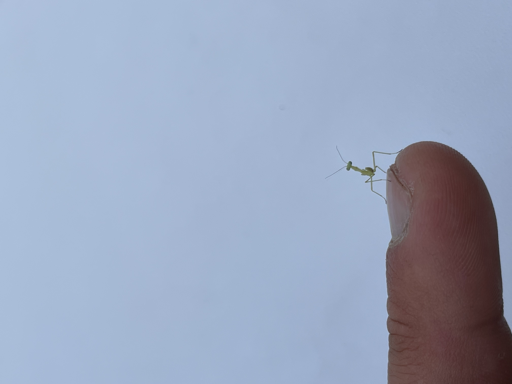

A little more about me!
This website is a place for me to express myself and let others get to know me.
Meet my dogs! Osha, Woody, and Frida are having a blast at the river. I like to think of this as their personality picture.

I enjoy writing! Here is an Op ed I wrote about our post COVID-19 economy:
The Key to Reopening Our Economy
We have reached a point in time as we try to manage the COVID-19 pandemic that we can now consider sending people back to work. The two most common approaches that we hear about to guide our return-to-work policies are the scientific and political approaches. However, I recommend we adopt a blended approach that includes consideration for the equal protection clause to ensure that it does not discriminate or exclude and guarantees people’s individual rights.
The purely scientific approach to making return-to-work decisions involves consulting with medical leaders about the safest method for people purely based on health and safety. In a best case scenario, doctors and scientists would not send anyone back to work unless they were tested negative for the virus and positive for the antibody. J. Philip Saul wrote in a U.S. News article, “A Plan to Contain COVID-19 and Get People Back to Work,” that this is because, “This group is very likely to be immune at least for this season, so they can go back to their work or assist someone else’s work as a volunteer.” Medical considerations would also include which people are at highest risk for disease, such as older people and those with other medical conditions. It would favor sending younger healthy people back to work sooner because they are at lower risk.
German researchers have suggested “immunity certificates” for people to show they have tested positive for the antibody. Although it would be beneficial to have people with the antibody returning to work safely, this would not work because it raises major issues regarding who gets access to certificates and splits society into the free and confined. Furthermore, serious questions have arisen regarding the accuracy of COVID-19 antibody testing. The FDA waived the requirement for confirmatory testing on antibody tests because they felt antibody testing was very important for public health and helping progress the economy, as stated in a Politico article. However, this action has made things worse, health care providers are now being advised to not use any antibody testing as a way to determine if someone carries the antibody. Everyday similar ideas are being brought up that take the scientific approach and their recommendations will be based solely on what will be most logical regarding the health and safety of people. (way to keep a level headed approach here)
The purely political approach is based on economic considerations and the belief that reopening the economy will save more lives than the medical approach to control the Coronavirus. The Republican Senator, Ron Johnson, said“The vast majority of people who get Coronavirus do survive… But we don’t shut down our economies because tens of thousands of people die from the common flu.” To further support a political solution, an ABC news article states “Pandemic could cause famines of ‘biblical proportions’.” The article suggests “130 million people could be pushed to the brink of starvation” because of the Pandemic. It is this type of thinking that leads politicians and economists to advocate reopening the economy sooner than the medical experts would recommend.
I would argue strongly in favor of a blended approach to get people back to work. A good example of this approach occurred last week when California Governor, Gavin Newsom, recommended a path forward to reopen the economy that would be “guided by science.” California’s plan requires medical experts to work with economists and politicians to create a plan. However, I propose that any plan for reopening must also include consideration of the equal protection clause and guarantee fair treatment of all individuals regardless of their socioeconomic status, race, gender, or disabilities.
The equal protection clause considerations should extend beyond all Californians and include all Americans. For this reason I propose a committee of experts at the federal level to include medical professionals, politicians, economists, and civil rights attorneys. The attorneys would be placed on the committee particularly to represent and protect the rights of all American citizens. This national committee would issue guidance and support of these goals for all the states to consider. The country is going through this together and we should all come out of this together.
Surfrider Foundation!
I am the chair of the Ocean Friendly Restaurants committee in the Isla Vista Surfrider Club at UCSB and my committee recently began a project to incentivise on-campus shops to use reusable mugs. Here is our proposal:
Isla Vista Surfrider
Surfrider Reusable Mug Program
OVERVIEW
When walking through a college campus, one of the most common accessories seen is the coffee cup. The caffeine that coffee shops on campus fuel students and faculty alike in their academic pursuits. But one aspect that is often overlooked when everyone is purchasing their daily buzz is the plastic cups they often come in. They are just one example of the 300 million tons of plastic that we produce each year. Especially as a university proudly on the beach, we are calling to action for residents and business owners to become more aware of the microplastics that these cups break up into that often end up polluting our waters and negatively impacting human and coastal health. The Surfrider Reusable Mug Program is an initiative to promote environmental sustainability on the UC Santa Barbara campus by decreasing, and potentially getting rid of altogether, single-use mugs.
IMPLEMENTATION STRATEGY
Using the Mug Drive program, Isla Vista Surfrider will oversee the collection of reusable mugs. To ensure effective tracking and promotion, Surfrider will design stickers for each mug, featuring promotion for Coral Tree Cafe. Additionally, customers will have the option to bring in their own mugs. Upon the initial purchase with a reusable mug, customers will be given a loyalty card. With each subsequent purchase made using the reusable mug, customers will receive a stamp on their loyalty card as an incentive. An alternative idea would be to put a QR code on each mug and keep track of them digitally. This method would rely less on the honors system, but would require work on the online side to create a way to monitor the mugs.
REWARD SYSTEM
After a certain number of purchases, customers will become eligible for rewards, such as a complimentary pastry or beverage, or a 50% discount on their next purchase. This rewards system not only encourages repeated use of reusable mugs but also promotes customer loyalty.
OUTCOMES
Transitioning to reusable mugs would be a pivotal step towards mitigating pollution and reducing carbon footprints at UC Santa Barbara. This would contribute to the preservation of our coastal ecosystems that we are so proud of. Moreover, this initiative serves as a prime educational opportunity within our institution, as a frontrunner in academia and innovation. Implementing this initiative would provide an opportunity to educate the campus community on the importance of reducing single-use plastic use.
Furthermore, the reusable mugs would have substantial long-term cost savings for Coral Tree Cafe. By eliminating the recurring expenses associated with purchasing single-use cups, this initiative would allow for a more economically viable and environmentally conscious business model. This shift not only aligns with our institutional values but also underscores our commitment to sustainable practices.
